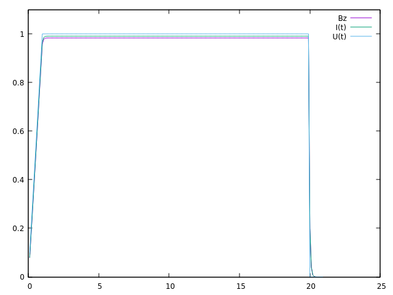
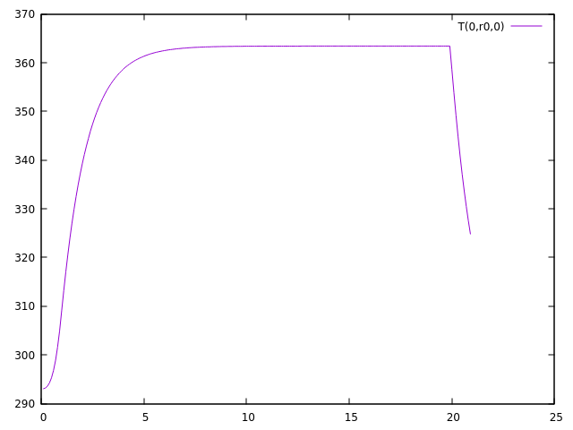
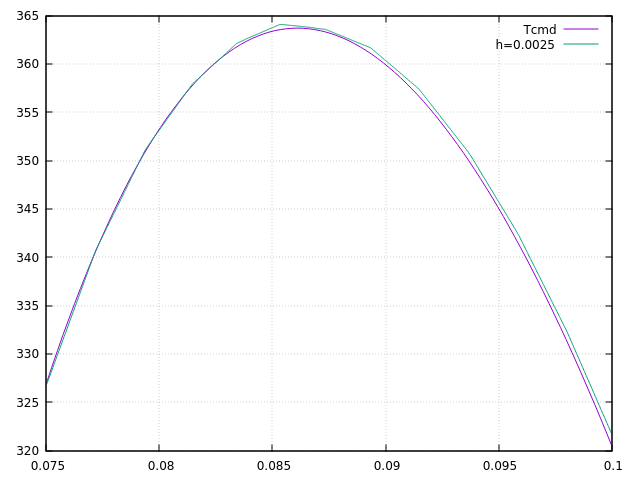

Linear resolution
As we have seen at the end of the previous paragraph, a first way to solve the problem is to first solve the mqs equations and then solve the heat equation, assuming it is linear.
1. Theoretical results
Let’s go over our heat equation again :
Here we are only interested in the stationary solution in a hollow cylindrical area. We Let us further assume that T is only a function of r . Let’s note U the potential difference applied to the edges of the magnet. In this case, the second member becomes :
So the equation becomes :
By integrating, we obtain :
where \(A\) is a constant. By reintegrating, we finally find :
Where B is a constant. The constants A and B will be determined by the boundary conditions applied to the internal radius \(r_1\) and external radius \(r_2\) of the magnet.
Now let’s look for the maximum temperature. This is obtained when \(r\) is such that \(\frac{\partial T}{\partial r}=0\). We must therefore solve the equation :
where the solution is :
so :
Now, let’s assume that the boundary conditions are Robin-type, that is:
with n the normal unit outside the magnet. In addition, let’s note \(h_1=h(r_1)\), \(h_2=h(r_2)\), \(T_1=T_w(r_1)\) and \(T_2=T_w(r_2)\).
Applying Robin’s conditions to the previously found solution T, we obtain :
So :
So:
with
If \(T_2=T_1\) we have :
It can therefore be seen that \(B=T_{max}\) and \(r_0=r_{max}\)
2. Implementation under feelpp
Now let’s implement the first method, first solving the two equations mqs, then solving the heat equation, assuming that \(k\) and \(\sigma\) are linear, and with the source term \(f=\frac{1}{\sigma} ||J||^2\).
To do this, we will "assemble" the mqs bdf and heat codes.
For the mqs part, it’s exactly the same as in the BDF part.
For the heat part, there are some changes. First, we define \(T\) on the conductor.
auto Th = Pch<1>( mesh, markedelements(mesh, range) );Then, after solving the mqs equations and calculating the term J, the heat equation is solved as in the heat part, using the source term J
l1 += integrate(_range=markedelements(cond_mesh, material.meshMarkers()),
_expr = (1/sigma) * id(T) * inner(idv(J_cond)+idv(J_induct),idv(J_cond)+idv(J_induct)) );We then solve this second equation and start again at the following time step .
All the code is available in the mqsheatweak.cpp file in the heat branch.
3. Results
To verify the code, we will perform a simulation on the one solenoidal magnet case, the same as in the validation part.
After a simulation using the following command line :
mpirun -np 8 feelpp_mqs_heatmqs --config-file cases/mqsheat/mqsheatweak.cfg --gmsh.hsize=2.5e-3 --pc-type gasmwith the config file
directory=mqs/mqsheatweak
#init solution
A0={0,0,0}
V0=0
T0=293
model-file=$cfgdir/mqsheatweak.json
[gmsh]
hsize=5.e-3
filename=$cfgdir/mqsheatweak.geo
partition=1
[mqs]
ksp-monitor=false
#pc-type=gamg
pc-type=fieldsplit
fieldsplit-type=additive #additive, multiplicative, symmetric-multiplicative
[mqs.fieldsplit-0]
pc-type=gamg
[mqs.fieldsplit-1]
pc-type=gamg
#[exporter]
#geometry=static
[ts]
time-step=0.1
time-final=22
[bdf]
time-step=0.1
time-final=22and the json file
{
"Name": "CoupledCart",
"ShortName":"MSC",
"Models":
{
"use-model-name":1,
"solid":
{
"equations":"Elasticity"
},
"maxwell":
{
"equations":"magnetostatic-cart"
}
},
"Parameters":
{
"Tau":"1",
"V0": "0",
"V1": "1*1/4."
},
"Materials":
{
"copper":
{
"markers":"coil",
"physics":["heat","electric","solid","maxwell"],
"sigma":"58.e+6",
"mu_mag": "1",
"Cp":"380",
"rho":"10000",
"k":"380"
},
"air":
{
"markers":"air",
"physics":["maxwell"],
"mu_mag": "1",
"Cp":"1004",
"k":"0.0262",
"rho":"1.292"
}
},
"BoundaryConditions":
{
"electric-potential":
{
"Dirichlet":
{
"V0":
{
"expr":"0"
},
"V1":
{
"expr":"1/4.*t/(0.1*10)*(t<(0.1*10))+(1/4.*(t<(0.5*40))+0*(t>(0.5*40)))*(t>(0.1*10)):t"
}
}
},
"magnetic-potential":
{
"Dirichlet":
{
"Border":
{
"expr":"{0,0,0}"
}
},
"DirichletX":
{
"V0":
{
"expr":"0"
},
"OXOZ":
{
"expr":"0"
}
},
"DirichletY":
{
"V1":
{
"expr":"0"
},
"OYOZ":
{
"expr":"0"
}
},
"DirichletZ":
{
"V0":
{
"expr":"0"
},
"OXOZ":
{
"expr":"0"
},
"V1":
{
"expr":"0"
},
"OYOZ":
{
"expr":"0"
}
}
},
"temperature":
{
"Robin":
{
"Rint":
{
"expr1":"80000", (1)
"expr2":"293" (2)
},
"Rext":
{
"expr1":"80000",
"expr2":"293"
}
}
}
},
"PostProcess":
{
"Exports":
{
"fields":["magneticPotential","magneticField","temperature"]
}
}
}| 1 | k in robin condition |
| 2 | Tw in robin condition |
This is what we get for \(Bz\) and \(I\) :

We are tending towards the same values as the resolution part.
Now let’s take a look at the temperature results.
First, here’s what we get for the temperature in the simulation, at the point \((0,r_0,0)\), where \(r_0\) is the same as in the theoretical part. We have \(r_1=0.075\), \(r_2=0.1002\), \(h_1=h_2=80000\), \(k=380\), so \(r_0 \approx 0.086109025458\)
Here is what we get for the temperature at point \((0,r_0,0)\):

We can see that at the end of the plateau, which is equivalent to the stationary regime, the temperature is approximately \(363.4095126K\).
The expected theoretical result, calulated with the result in the theorical part is \(T=363.702800489573K\), which is very close to what we have.
Now let’s compare the temperature according to the radius, at the end of the plateau in stationary mode.

We can see that our results are very close to the theoretical result, which shows that the code is working correctly.
So we can see that, on the one hand, the results of the mqs part are satisfactory, because they are the same as what we obtained at the beginning, and the heat equation also gives the expected results. Now we can talk about the second case, namely the resolution of the mqs equations first, and then the resolution of the non-linear heat equation using a fixed point method